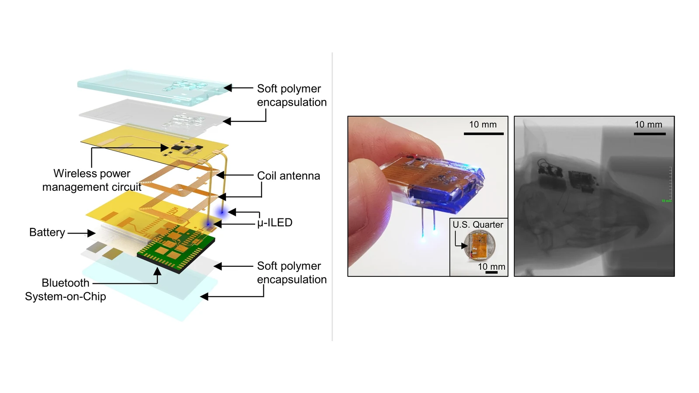
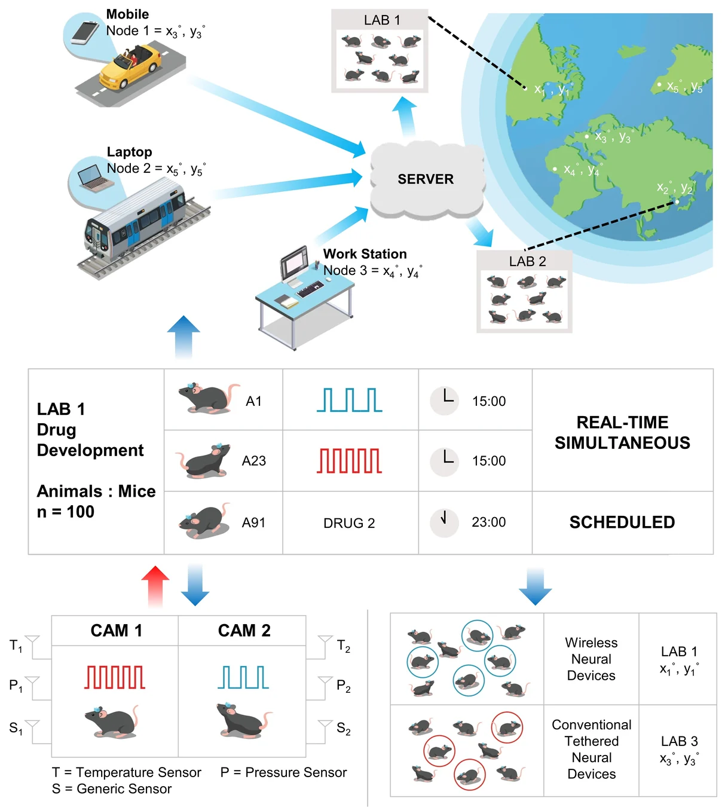
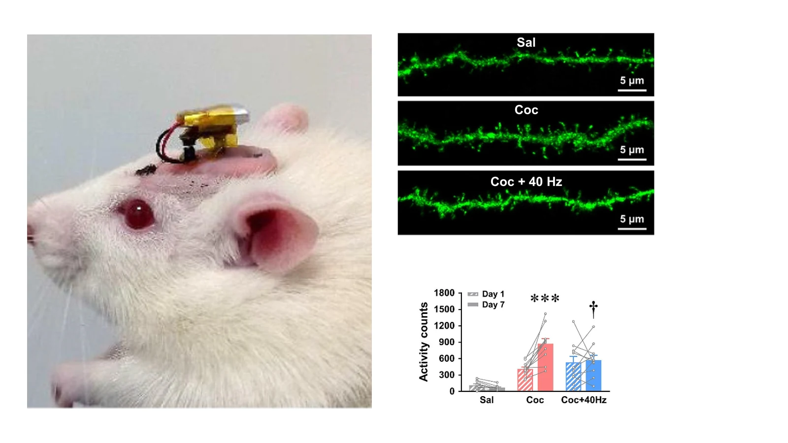

Northwestern University
Postdoctoral Scholar · Prof. John A. Rogers
Wireless bioelectronics · Neural interfaces
Postdoctoral Scholar at the Querrey Simpson Institute for Bioelectronics, Northwestern University
Developing soft, implantable, and wearable bioelectronic systems for wireless sensing, neural modulation, and connected healthcare.
About
I am a postdoctoral scholar working at the intersection of biomedical engineering, implantable electronics, and neural interfaces. My research combines miniaturized electronics, wireless communication, soft materials, and neural engineering to create systems for long-term sensing and therapy.
Academic background
Selected appointments and training; full details are available in the CV.
Postdoctoral Scholar · Prof. John A. Rogers
Postdoctoral Scholar · Prof. Jae-Woong Jeong
Visiting Researcher · Prof. Zhenan Bao
Ph.D. in Electrical Engineering
Research
Published research in wirelessly powered neural implants, scalable experimental infrastructure, and circuit-specific optogenetic modulation.

Implantable bioelectronics · Nature Communications, 2021
A fully implantable platform with wireless battery charging and programmable control for chronic optogenetic studies.
Read the publication
Wireless systems · Nature Biomedical Engineering, 2022
A modular network ecosystem for large-scale, automated behavioral and circuit neuroscience across multiple laboratories.
View publication
Neural interfaces · Neurobiology of Disease, 2024
Wireless pathway-specific stimulation to investigate and attenuate cocaine-induced behavioral sensitization.
View publicationPublications
STAR Protocols · Featured on the Cover
C. Y. Kim†, K. E. Parker†, E. Y. Jeong, et al.
Advanced Electronic Materials · Featured on the Front Cover
C. Y. Kim†, J. Lee†, E. Y. Jeong, et al.
Neurobiology of Disease
M. J. Ku†, C. Y. Kim†, J. W. Park, et al.
Nature Biomedical Engineering
R. Qazi†, K. E. Parker†, C. Y. Kim†, et al.
Nature Communications
C. Y. Kim†, M. J. Ku†, R. Qazi, et al.
† Equal contribution
Honors
Selected individual fellowships and academic honors.
Fellowship
National Research Foundation of Korea
Fellowship
KAIST
KAIST Electrical Engineering
Also selected among the Top 10 achievements in social problem solving · Ministry of Science and ICT
Best Research Achievement · KAIST Electrical Engineering
Sungkyunkwan University
Technical profile
Nordic nRF BLE/SoC, MCU development, circuit design, and micro-soldering
C/C++, Arduino IDE, SEGGER Embedded Studio, and Python
Altium Designer, AutoCAD, Rhino, KeyShot, Android Studio, and Ansys HFSS
E-beam and thermal evaporation, mask alignment, ICP ashing, and Parylene coating
Contact
For research collaborations, academic opportunities, or questions about my work, please reach out by email.